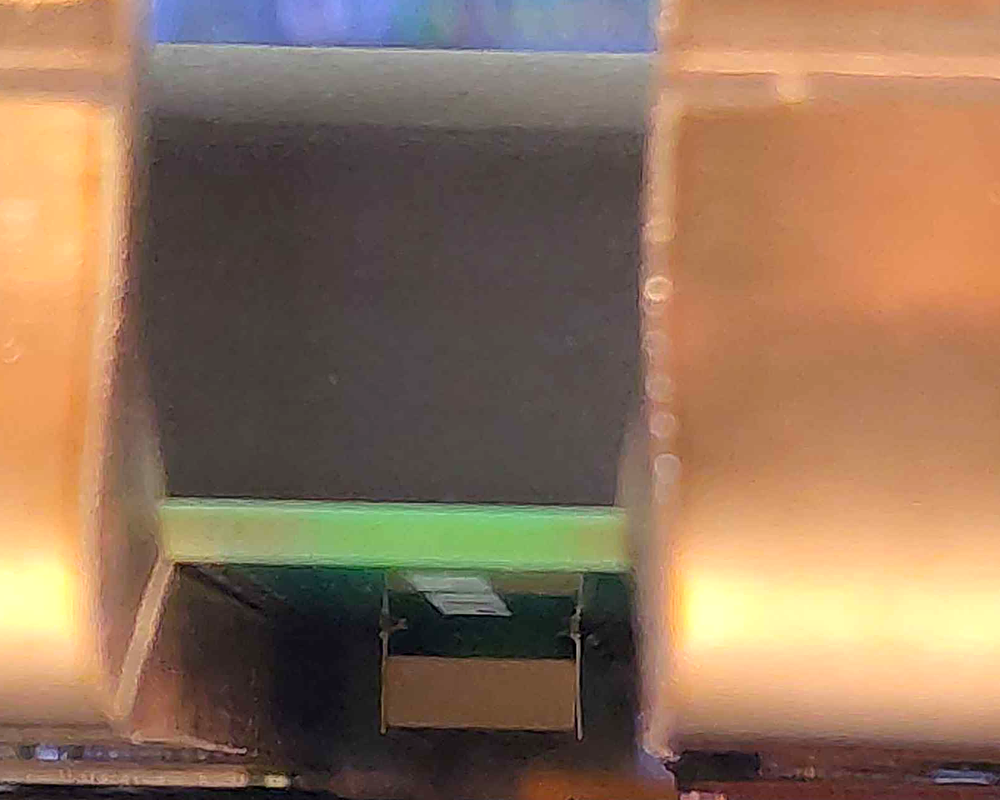
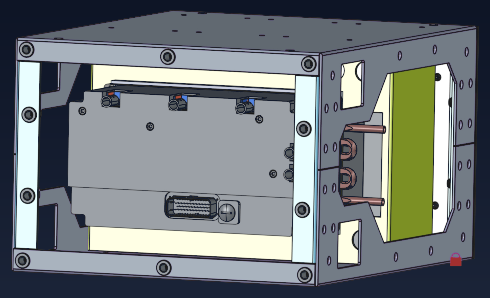
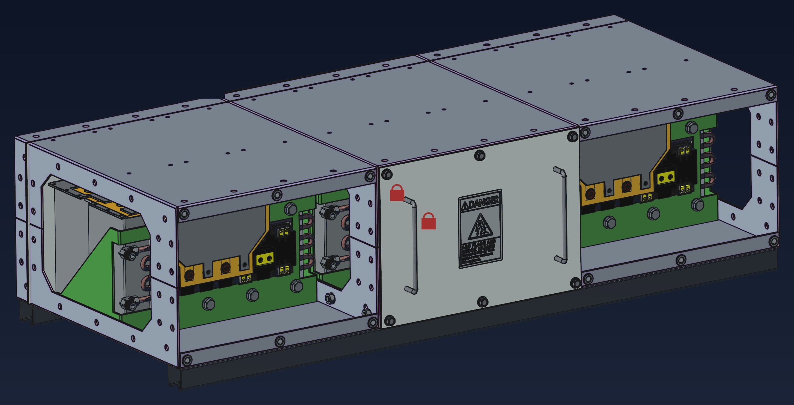

The open-source, safety-engineered power conversion platform — 50 kW to 1 MW+.
Power electronics underpin electrification — yet above hobby scale, almost none of it is open. Sealed firmware and proprietary hardware lock out the researchers, educators, and small manufacturers who would otherwise build, study, and improve on it. OpenVVVF is the open alternative: one reusable control module plus swappable power stages — motor drive to bidirectional DC-DC, IGBT today, SiC-ready.
The platform
One control module, a stack of replaceable boards
1
DC-link capacitor board
Electrolytic cans (heatsunk to the baseplate); film + ceramic caps beneath — MLCCs soldered directly between the IGBT terminals for an ultra-short commutation loop.
2
IO board
USB-B, dual CAN FD, and the expansion socket for application IO.
3
Control board — dual-MCU
Main MCU runs FOC motor control; an independent safety coprocessor monitors safety-critical outputs and can bring the system to a safe state.
4
Gate-drive board
Isolated gate drive and sensing for the three IGBT half-bridges.
Below the stack, three IGBT half-bridge modules conduction-cool to an aluminum baseplate — no liquid loop on Size 2. The same control module runs every chassis: motor self-commissioning (resistance / inductance calibration for PMSM and induction machines), the RTE Studio model-based workflow — fully open-source, no MATLAB required, with a software-in-the-loop (SIL) pipeline in progress — and the browser-based Telemetry Viewer. The controls program has also benchmarked ADRC and MPCC against the production FOC.

Ceramic MLCCs between IGBT terminals.
Platform family
One control module — four power stages
Control moduleDual-MCU control moduleFOC motor control + independent safety coprocessor · USB-B / dual CAN FD / expansion · RTE Studio + Telemetry Viewer
Size 1
~50 kW class inverter
Compact chassis for light EVs and lab benches.
Early designSize 2 Inverter
~100 kW · 400 V / 465 A
Built and bench-tested; validation under way.
In validationSize 2 DC-DC
Charging, storage & microgrids
Same inverter blocks, liquid-cooled enclosure.
In progressSize 3
MW class · 900 V / 1400 A
All-film DC-link; arc-flash-analyzed enclosure.
Design in progress
Evidence
Built, bench-tested, on the record
400 V class465 A continuous · 600 A peak (60 s) · 150/200/400 V by DC-link selection
10Formal test reports · every one links its interactive telemetry log
PMSM + inductionMotor self-commissioning, instrument-verified

Fig. 1 — 180 V power-stage bring-up. C2 chassis (200 V-class DC-link) driving a TECO MAX-IE3 10 HP induction motor; bus stepped 140 / 150 / 170 / 180 V.
When the bench supply hit its current limit at ~160 s and the bus collapsed to ~30 V, the controller rode through the dip and resumed stable operation — no reset, no fault. Peak ~38 A; max bus 182.5 V.
| Test campaign | Setup | Key result |
|---|
| 180 V power-stage bring-up | TECO 10 HP induction motor; bus stepped 140 to 180 V | 200 V-class validated; ~38 A peak; clean fault recovery |
| 1-hour no-load endurance | C2 + induction motor, 120 VDC, ~60 Hz | 60 min continuous, zero faults; thermal baseline |
| 180 V reversal stress, 20 min | ±60 Hz every ~45 s; passive cooling | 26 reversals, zero faults; max ~41 A |
| Self-commissioning accuracy | Inverter estimates vs. LCR meter; PMSM + induction | Resistance within −6.5 to +7.3 %; inductance +2.4 % |
Six further instrumented calibration reports underpin these results — 10 in all; each links its interactive telemetry log (JSONL). All reports are currently draft and revised in the open.
Safety engineering
Six independent paths to the safe state
MAIN MCU · STM32H723ZG
- FOC motor control & application logic
- Sensor plausibility checks, fault handling
- Owns gate-drive supply kill (channel A)
SAFETY COPROCESSOR · STM32G474RCTx
- Independent ADC monitoring of all safety-critical signals
- CAN bus snooping · challenge/response watchdog
- Owns a fully independent kill path — no trust in the main MCU
Safe state
SSO
Six-switch-open, immediate and hardware-enforced — no software ramp-down
TIM1 hardware break<100 ns
1oo2 gate-drive power kill~10 µs
Shared driver RESET<1 µs
Passive 3.3 V rail-loss pull-downno software
Watchdog-forced main-MCU reset~100 ms
Independent coprocessor kill<10 µs
ASIL D design target on the top safety goals via ASIL B(D) + ASIL B(D) decomposition across the two MCUs — ISO 26262 methodology applied as a design input, not a certification claim. Functional-safety roadmap: fault-injection, thermal, and vibration campaigns.
Hazards
17 identified at the torque / power boundary
HARA
Core platform + application profiles; TARA for cybersecurity; FMEA
Safety requirements
15 safety goals · 22 functional safety requirements
Test plans
92-test fault-injection plan; thermal & vibration campaigns planned
Standards
ISO 26262 & IEC 61800-5-2 safe-function mapping
Who & where next
A university lab with a megawatt roadmap
OpenVVVF is built in the Smart Power Lab at UC Santa Cruz. The lab's mission is open power electronics: hardware, firmware, and safety engineering that researchers, educators, and small manufacturers can actually study, build, and extend — the groups that sealed proprietary supply chains lock out.
Everything the project knows is published as it is learned: schematics and PCB releases, control firmware, hazard and threat analyses, and the raw telemetry behind every test claim. Sponsors and partners make the bench time, fabrication runs, and test campaigns possible.
Supported by

Trajectory
In build
Gen 7.1 hardware
Revision of the control-module hardware now in build.
Planned
Loaded testing & dyno
Dynamometer campaign on Gen 7.1 takes the platform from no-load validation to rated power.
In progress
Zero DSR integration
A Size 2 chassis is being readied for our 2018 Zero DSR electric motorcycle.
In progress
Size 1 + Size 2 DC-DC
~50 kW chassis (early design) and a liquid-cooled DC-DC variant for charging, storage, and microgrids.
Design in progress
Size 3 megawatt class
900 V bus, 1400 A, all-film DC-link; modular liquid-cooled enclosure with arc-flash containment analysis.

Size 2 DC-DC enclosure — design rendering. Same inverter hardware, liquid-cooled enclosure.

Size 3 megawatt-class enclosure — design rendering. Modular liquid-cooled bays, arc-flash containment analysis.
Every schematic, line of firmware, safety analysis, and test trace is public at docs.openvvvf.org.
OPEN HARDWARE · OPEN FIRMWARE · OPEN EVIDENCE